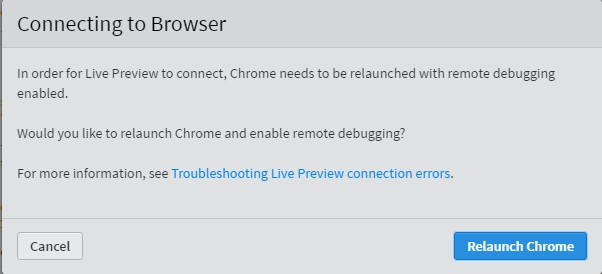
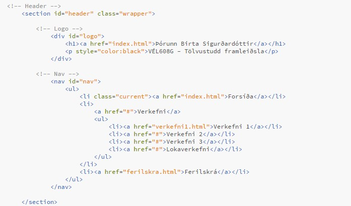
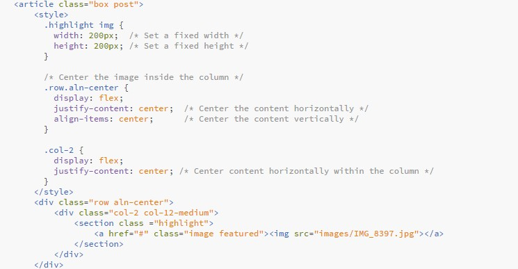
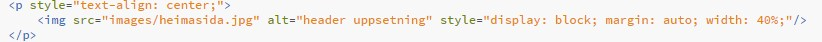
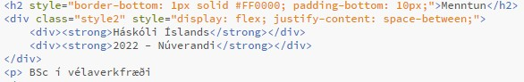

Hönnun á vefsíðu
Búa á til vefsíðu sem hýsir vinnuframlag (portfolio) til áfangans VÉL608G. Velja á og/eða smíða á html sniðmát fyrir vefsíðuna og skipuleggja hana með upplýsingum um mig og mína ferilskrá.
Undirbúningur
Þar sem að ég hafði aldrei gert heimasíðu áður eða þurft að vinna með HTML, þá byrjaði ég á því að skoða ítarefni fá kennara ásamt því að nota leitarorð eins og "How to create a website using HTML". Ég skoðaði einnig heimasíðu W3schools sem að bent var á í verkefnalýsingunni og reyndist hún mér vel til þess að ná utan um grunnhugtök forritunarinnar.
Til þess að fá betri hugmynd hvernig ég vildi setja upp vefsíðuna mína þá skoðaði ég nokkrar heimasíður frá nemendum fyrri ára og sá fljótt að ég vildi hafa heimasíðuna mína í frekar minimalískum stíl, þar sem á forsíðunni væru aðalupplýsingar um áfangan og mig en hluti eins og ferilskrá og verkefni mætti finna á undirsíðum.
Ég hlóð niður Brackets til þess að forrita HTML vefsíðuna og valdi mér síðan template frá HTML5 UP. Templateið sem varð fyrir valinu kallast "Escape Velocity" en mér fannst það nokkuð stílhreint og það sem heillaði mig mest var fellivalmyndin efst á síðunni og síðan rauða og hvíta þemað. Fyrsta vandamálið mitt kom upp þegar ég var nýbúin að setja templateið inn í Brackets en ég fékk ávalt villumeldinu þegar ég ætlaði að opna síðuna í Live Preview.

Þetta var sem betur fer fljótt leyst með því að haka við "Enable Experimental Live Preview" í Brackets.
Þegar ég gat loks opnað templateið í chrome þá langaði mig aðeins að breyta litunum í templatinu líkt og ég hafði séð fyrrum nemanda gera á sinni vefsíðu. Ég gerði þetta í CSS-skránni með því að breyta litnum á yfirskriftum texta í rauðan lit með HEX kóðanum #ff0000.
Í CSS-skrá er hægt að breyta útliti vefsíðu, eins og bakgrunni, letri og textastíl. Til að laga útlitið á síðunni og breyta þemanu, vann ég í aðalskránni main.css, þar sem allar útlitsreglur vefsíðunnar eru geymdar. Þetta einfaldar breytingar og gerir það að verkum að útlitið helst samræmt á öllum síðum án þess að þurfa að breyta hverri þeirra fyrir sig
Forritun og uppsetning vefsíðu
Eftir að ég setti upp sniðmátið í Brackets og gert nauðsynlegar breytingar á útlitinu í CSS-skránni, hófst ég handa við að hreinsa sniðmátið. Ég fjarlægði óþarfa þætti og flipa sem ég vildi ekki nota.
Mér fannst einfaldast að byrja á því að laga sniðmát forsíðunnar (index.html) og gera headerinn og footerinn eins og ég vildi hafa þá. Ég kláraði að stilla útlitið að mínum þörfum og bjó síðan til lendingarsíður fyrir undirsíður vefsíðunnar. Í síðuhausnum vildi ég hafa flipa þar sem hægt væri að finna forsíðu, ferilskrá og síðan að öll verkefni kæmu í dropdown-valmynd. Þetta gerði ég með eftirfarandi kóða sem sést hér að neðan.

Fyrir undirsíðurnar notaði ég layoutið "No sidebar" og passaði að nota sömu headera og footera á öllum síðum svo að vefsíðan væri samræmd og auðveldara að viðhalda henni.
Þegar layoutin fyrir síðurnar voru tilbúin, setti ég upp ferilskránna mína en ég vildi hafa hana stílhreina. Það fyrsta sem ég vildi setja var mynd af mér en það reyndist smá strembið að fá staðsetningu og stærð myndarinnar rétt. Eftir smá google og hjálp frá ChatGPT náði ég að stilla stærð myndarinnar og setja hana á miðju blaðsíðunnar með eftirfarandi skipunum.

Í kóðanum notaði ég .highlight img til að stilla breidd og hæð myndarinnar í 200px. Þá nýtti ég flexbox í .row.aln-center og .col-2 til að miðja myndina bæði lárétt og lóðrétt innan þess hluta vefsíðunnar sem hún var í. Þessi aðferð virkaði mjög vel þegar ég var að bæta mynd í ferilskrána, þar sem ég þurfti bæði að stýra stærð og miðjun myndarinnar. Þegar ég bætti myndum í verkefni 1 hins vegar, gat ég notað einfaldari skipanir sem dugaði til að ná þeirri miðjun sem ég vildi, eins og sést hér að neðan.

Í þessum kóða er myndin miðjuð með text-align: center; í p-taginu, sem miðjar allt innihald lárétt. Myndin sjálf er stillt með display: block; og margin: auto; til að miðja hana lárétt. Ég nota síðan width: 40% til að stilla breidd myndarinnar á 40% af breidd síðunnar eða umhverfis.
Í ferilskránni vildi ég setja rauða línu undir hvert flokka heiti og síðan að menntun og/eða starf sé í sömu línu og ártalið. Þetta gerði ég með eftirfarandi kóða.

Hér nota ég border-bottom: 1px solid #ff0000; til að bæta rauðri línu undir fyrirsögnina og bæti við padding-bottom: 10px; til að gera útlitið snyrtilegra og bæta við auka rými undir fyrirsögnina. Ég setti skóla og ártal í sömu línu með því að nota div-tag og flexbox. Með justify-content: space-between; tryggði ég að textarnir væru raðaðir þannig að skóli og ártal væru í sitthvorum endanum á línunni.